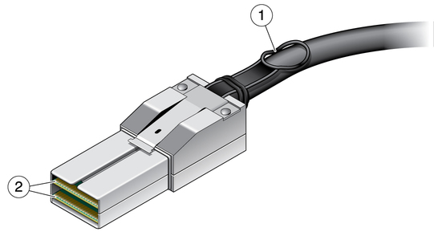

High-Speed Internet Connections
Modern Day Applications of High Speed Connections
Post by Kenneth Eisenhardt, Dec. 18, 2018.
Networks Current Applications
Network connections have come an incredible distance from their humble beginnings in the 1970's. In 2018, we have seen network speeds surpass 1 Gigabye per second (Gbps) for home use, something the original creators of interconnected computers never would have imagined. But sometimes it can be hard to determine what types of connections and network speeds you, as a home user, should be paying for. In addition, it can be confusing to know whether high upload speeds are also worth paying for.
In this article I hope to help break down and explain the differences between the most common types of connections available to home users, and, based on different use cases, provide insight as to which connections would benefit you the most.
Cable Internet Connection
Fiber Optic Connections
Infiniband Connections
Beginning this list is the most common type of internet connection for home users today. Cable internet connections can provide speeds that reach close to 1 Gigabit per second. Generally speaking, most cable internet packages range from 50 megabits per second on the lower end of the scale, to 400 megabits per second on the higher end. For the casual home user with children, a 100-150 megabit connection will provide ample network speeds to handle 4+ users in your household, without speed degradation. While bandwidth may play a factor in slow speeds, generally speaking, the network speed is usually the bottleneck and not the bandwidth. Modern routers are more than capable to handle a variety of streaming, gaming, and general web browsing for multiple users.
Fiber Optic connections have become the standard for almost all aspects of internet connection, with the exception of the "last mile", as described in the "History of High-Speed Connections" article. To summarize, in most cases, the only remaining connections that are not fiber optic are the physical cables running from the telephone lines to a physical building. The use of a fiber optic connection can be very expensive to implement, however, the network speeds are exceptionally fast, providing top of the line connection and speeds to the internet for all connected users. Fiber optics can see speeds as low as 10 megabits per second, but can service speeds as fast as multi gigabits per second. Fiber optic connections are generally reserved for home users who do their own home networking, store large quantities of data on their network, or host services on their network for others to use/view/interact with. Such cases can be a user who hosts their own webserver for a personal website, a usrs who hosts their own video game server for themself, their friends, or others on the internet to make money. Pictured below is a standard fiber optic cable.
Finally, there is the Infiniband cable. This cable is reserved for extreme home networking enthusiasts and provides some of the fastest internet speeds currently know. The Infiniband cable is capable of providing speeds of over 10 gigabits per second. There is not much to say about the Infiniband Cable, as its practicality for home use is fairly low, however, it is an option for those home users who are transferring and backing up massive quantities of data between devices on their network. Infiniband connections are most commonly used in High Performance Computing Clusters, in many universities and research institutions for this same reason, but can be used for home applications, just at a very high price point.
